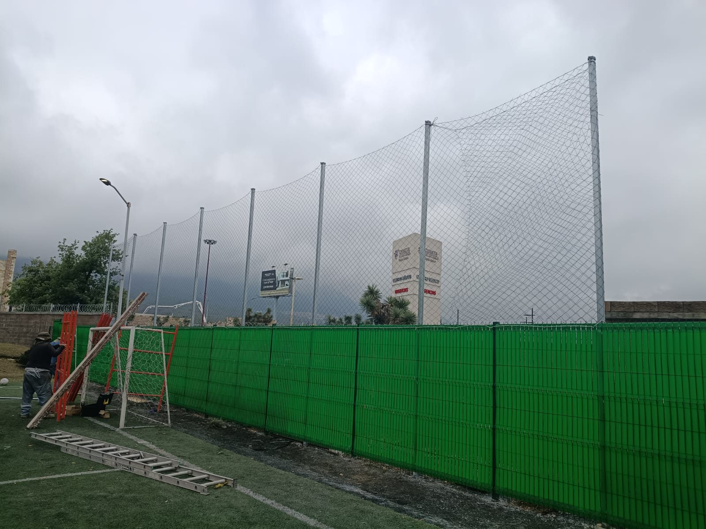
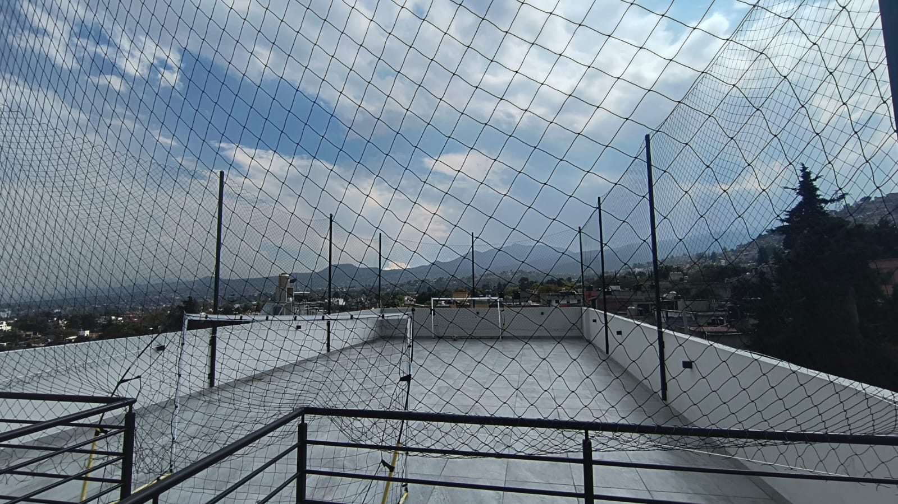
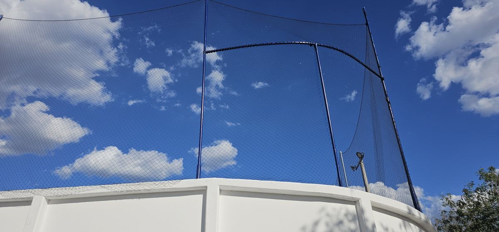
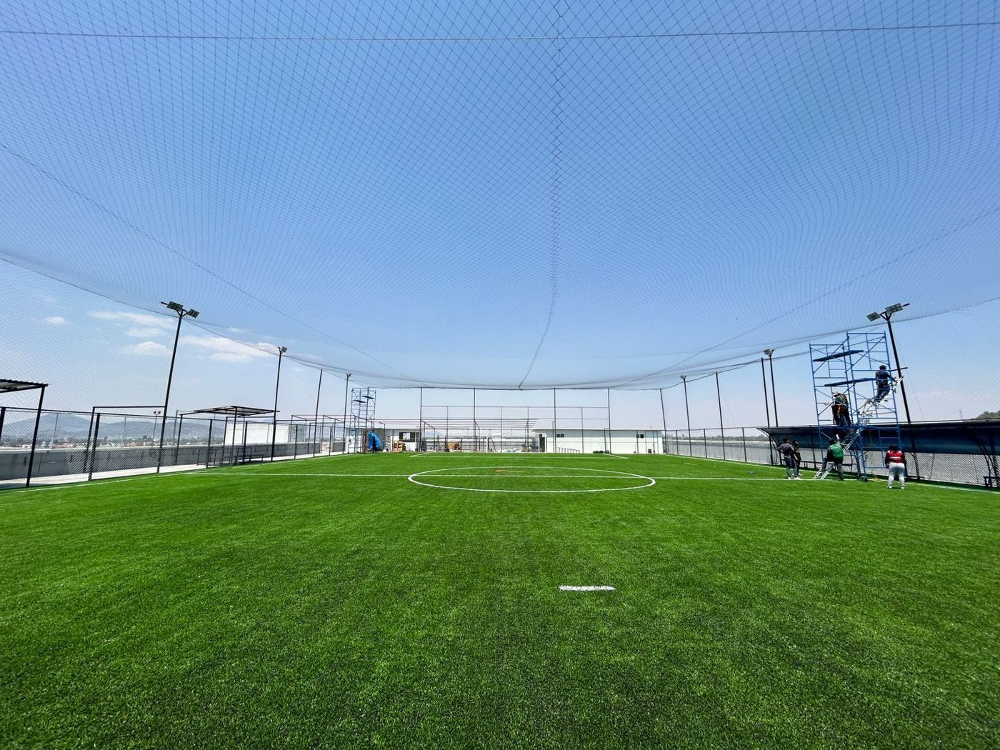

Es de las primeras preguntas que nos hacen: ¿qué altura debe tener una red perimetral? No hay una sola medida que sirva para todas las canchas. La altura correcta depende de por dónde salen los balones, de qué hay del otro lado y de si ya tienes una barda.
Aquí te explico cómo calcularla para no quedarte corto ni pagar metros de red que no necesitas.
La regla: la altura la decide el balón que se escapa
Una red perimetral (también le dicen red de contención o malla para cancha) se cotiza por metro cuadrado. Cada metro de altura que agregas se multiplica por todo el largo de la cancha, así que subir "por si acaso" sale caro. Al revés, quedarse corto significa balones en la calle, en los techos de los vecinos o en los autos.
Por eso, antes de pensar en un número, observa tu cancha unos días:
- ¿Por qué lado salen más balones? Normalmente es detrás de las porterías, donde van los disparos fallados.
- ¿Qué hay del otro lado? No es lo mismo un terreno baldío que una calle, ventanas o un estacionamiento.
- ¿Los balones salen por encima de todo? Si pasan por arriba de cualquier altura razonable, lo que necesitas es un techo de red, no más altura.
Las alturas más comunes: 4, 6 y 8 metros
En la mayoría de las canchas que cerramos, la red mide 4, 6 u 8 m de alto. Cuál te conviene depende de lo que viste arriba: por dónde salen los balones y qué hay del otro lado.
Lo que más recomendamos es que la red no empiece en el piso, sino sobre malla ciclónica:
| Malla ciclónica abajo | Red perimetral arriba | Altura total |
|---|---|---|
| 2 m | 4 m | 6 m |
| 2 m | 6 m | 8 m |
| 2 m | 8 m | 10 m |
No es obligatorio, pero suele ser lo más útil: los dos primeros metros de malla ciclónica detienen a los jugadores, evitan que choquen contra la red y así se evitan rupturas. ¿Y por qué no hacer todo de malla ciclónica? Porque la instalación y la herrería que lleva la malla ciclónica a toda la altura cuestan más que la red.
Son medidas de referencia. La medida final la ajustamos contigo con las fotos y las medidas de tu espacio.

No todos los lados necesitan la misma altura
Un error común es cerrar los cuatro lados a la misma altura. Si los balones salen sobre todo detrás de las porterías, puedes subir la red en los fondos y dejar los laterales más bajos. Así concentras el presupuesto donde la red trabaja. En el cotizador cada lado se mide por separado: largo y altura de cada sección.
Sobre barda: altura total contra altura de red
Si tu cancha ya tiene barda o malla ciclónica, la red puede ir encima para ganar altura sin construir más. Aquí conviene separar dos números:
- Altura total del cerramiento: desde el piso hasta la orilla de arriba de la red.
- Altura de la red: solo lo que va por encima de la barda. Esa es la que se cotiza.
Ejemplo: si quieres una altura total de 8 m y tu barda o malla ciclónica mide 2 m, la red que necesitas es de 6 m de alto.

Si combinas malla ciclónica abajo y red arriba, revisa nuestra comparación de red perimetral o malla ciclónica para cancha.
Cuando la altura ya no alcanza: techo de red
Si los balones salen por encima aunque subas la red, o la cancha está junto a algo que no se puede golpear (cristales, techos, autos), conviene evaluar un techo de red. Se cotiza aparte: largo por ancho de la cancha.

Más altura pide mejores postes
Entre más alta la red, más carga reciben los postes cuando hay viento o balonazos. Recomendamos tubo galvanizado de 2" en adelante, con argollas arriba y abajo, y de 4.5 a 6 m de separación entre postes. Si la red es muy alta o lleva techo, conviene que un especialista revise la estructura. En qué preparar antes de instalar una red perimetral está la lista completa.
Qué mandarnos para cotizar
- Largo de cada lado que quieres cerrar y la altura que crees que necesita.
- Fotos de cada lado y de lo que hay del otro lado de la cancha.
- Si hay barda o malla ciclónica, y cuánto mide.
- Si los balones también salen por arriba.
Fabricamos redes perimetrales para canchas de fútbol de nylon alquitranado negro, a la medida y con el envío incluido en la cotización. Si aún no defines la abertura, lee redes de 1, 2, 3 y 4 pulgadas.
Preguntas frecuentes
¿Qué altura debe tener una red perimetral para cancha de fútbol?
Las alturas de red más comunes son 4, 6 y 8 m. Lo que más recomendamos es ponerla sobre 2 m de malla ciclónica, para una altura total de 6, 8 o 10 m. Cuál conviene depende de por dónde salen los balones y de qué hay del otro lado.
¿Todos los lados de la cancha deben tener la misma altura?
No necesariamente. Si los balones salen sobre todo por los fondos, conviene subir la red ahí y dejar los laterales más bajos para no pagar metros que no trabajan.
¿Cómo se mide la red si va sobre una barda?
Se cotiza solo la parte que va por encima de la barda. Si quieres 8 m de altura total y la barda mide 2 m, la red es de 6 m de alto.
¿Cuándo conviene un techo de red en lugar de más altura?
Cuando los balones salen por encima de cualquier altura razonable o la cancha está junto a cristales, techos o autos. El techo de red se cotiza aparte, por el largo por el ancho de la cancha.